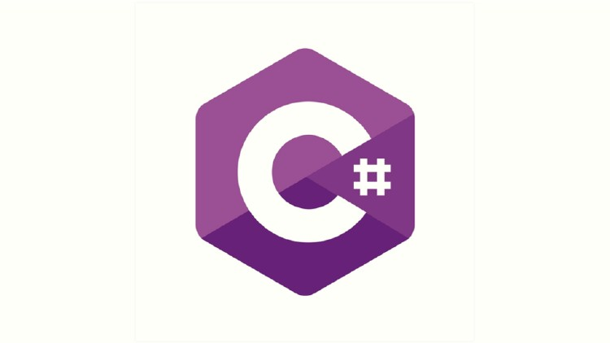

Code editing.
Redefined.
Free. Built on open source. Runs everywhere.
By using VS Code, you agree to its
license and privacy
statement.


IntelliSense
Built-in Git
Extensions

Meet IntelliSense.
Go beyond syntax highlighting and autocomplete with IntelliSense, which
provides smart
completions based on variable types,
function definitions, and
imported modules.
Print statement debugging is a thing of the past.
code right from the editor.
Launch or attach to your running apps and debug with break points, call stacks, and
an
interactive console.


Git commands built-in.
Working with Git and other SCM providers has never been easier. Review diffs,
stage files, and make commits right from the editor. Push and pull from any
hosted SCM
service.
Extensible and customizable.
Want even more features? Install extensions to add new languages, themes,
debuggers, and to connect to additional services. Extensions run in separate
processes, ensuring they won't slow down your editor. more about
extensions.


Deploy with confidence and ease
With Microsoft Azure you can deploy and host your React, Angular,
Vue, Node,
Python (and more!) sites, store and query relational and document based data,
and scale with serverless computing, all with ease, all from within VS
Code.
VS Code for
 JavaScript
JavaScript
 Python
Python
Java
 Markdown
Markdown
 TypeScript
TypeScript
 C/C++
C/C++
JSON
Powershell
 HTML/CSS
HTML/CSS
 C#
 PHP
PHP
YAML
Want new features sooner?
Get the insiders build instead.
Use vscode.dev for quick edits online!
GitHub, Azure Repos, and local files.
License and Privacy Terms
By downloading and using Visual Studio Code, you agree to thelicense
termsand privacy
statement. VS Code automatically sends telemetry data and crash dumps to help us improve the
product. If you would prefer not to have this data sent please go see How to
Disable Crash
Reporting to learn how to disable it.
VS @code does so many things right. I’m constantly impressed by the UX, and customizing workspace / user preferences is no exception. 🙌🏼💯 It just keeps getting better ❤️
VS Code will have deep remote development. You can connect to a container running a different OS and use any VS Code plugins, linting, debugging for that environment. 🔥🔥🔥
VS Code is my most used and favorite editor. I love being able to customize the editor - changing the layout, the icons, fonts and color scheme is so easy!